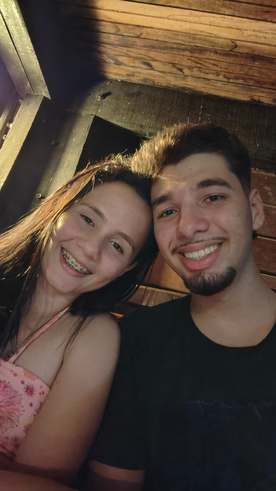

21.02.2026
O começo de nós
Foi aqui que a gente começou. E eu mal imaginava o quanto você ainda ia transformar os meus dias.
✧ uma surpresa do seu Feliphe ✧
e eu escolheria você de novo. ♡
Talvez eu nem sempre encontre as palavras certas quando estou com você… então fiz esse cantinho para te mostrar um pouquinho do tamanho do meu amor.
Feito com carinho, do jeitinho que só nós entendemos.

minha pessoa favorita ♡pra minha menina favorita
Se eu pudesse voltar ao dia em que tudo começou, eu viveria tudo outra vez. Porque desde que você chegou, a minha vida ganhou um sentido ainda mais bonito.
cada segundo com você vale a pena
21 de fevereiro de 2026: o dia em que começou a minha parte favorita da história.
Eu não quero só estar com você nos dias bonitos. Quero ser a mão que você segura quando os dias não forem tão fáceis.
porque amar você é escolher ficar. ♡as páginas que já escrevemos
Algumas datas, muitos sentimentos e uma certeza: eu amo dividir a vida com você.
Foi aqui que a gente começou. E eu mal imaginava o quanto você ainda ia transformar os meus dias.
Entre conversas, risadas, carinhos e até as nossas bobeiras, fui descobrindo que os momentos mais simples são especiais quando estou com você.
Um dia para comemorar a pessoa maravilhosa que você é. E eu fico feliz demais por poder fazer parte da sua vida.
Hoje eu não comemoro só uma data. Comemoro você, a gente e a sorte de poder chamar você de meu amor.
uma coisinha a mais que preparei
Toque nos corações. Tem uma mensagem minha escondida em cada um deles.
Se eu soubesse que aquele começo ia me trazer você, eu teria desejado que o tempo passasse mais devagar para guardar cada segundo.
Seu sorriso tem um jeito de fazer qualquer dia meu ficar melhor, mesmo quando você nem percebe.
Eu amo seu jeito de ser. Até os detalhes que você talvez ache bobos são exatamente os que me fazem gostar mais de você.
Se depender de mim, nunca vai faltar abraço apertado, beijinho, carinho e um motivo para ficar juntinho.
Eu amo quando a gente ri de coisas que provavelmente ninguém mais entenderia. É tão nosso, sabe?
Você me ensina todos os dias que amar também é ouvir, cuidar, ter paciência e crescer ao lado de alguém.
Tem horas em que eu só queria estar pertinho de você. Porque até depois de um dia juntos eu já fico querendo mais.
Quero viver coisas grandes com você, mas também as pequenas: um café, um abraço no fim do dia, um lar cheio de carinho.
Hoje, amanhã e em todos os dias em que a vida nos permitir, eu quero continuar escolhendo você. Não por obrigação, mas porque é com você que eu quero estar.
momentos que moram em mim
Guardei algumas das nossas fotos aqui porque meu coração sorri quando lembra de nós dois.
e ainda falta tanto álbum para a gente preencher… ♡
tem algo que eu preciso te dizer
Escrevi com o coração. Talvez assim você entenda um pouquinho de tudo o que sinto.
Minha Ana Júlia,
Hoje a gente completa nove meses juntos. Nove meses que, para muita gente, podem parecer só um pedacinho de tempo. Mas, para mim, significam tanta coisa que às vezes eu nem sei por onde começar.
Antes de você, eu nem imaginava que alguém pudesse mudar tanto a forma como eu vejo os meus dias. Aí você chegou, com seu sorriso, seu jeitinho e esse coração que eu amo tanto, e mudou a minha vida de um jeito que eu não consigo explicar direito.
Eu sei que nem sempre sou o melhor com as palavras. Às vezes faço brincadeira na hora errada, fico distraído ou não demonstro tudo do jeito que você merece. Mas eu quero que você nunca duvide de uma coisa: você é uma das pessoas mais importantes da minha vida.
Hoje eu nem consigo imaginar a minha rotina sem você. Sem nossas conversas, nossos momentos de carinho, nossas risadas e até as nossas implicâncias bobas. Você virou meu porto seguro, minha companhia preferida e a pessoa para quem eu quero contar tudo.
Não é que eu não consiga existir sozinho. É que a vida ficou infinitamente mais bonita com você nela, e eu não quero imaginar um futuro em que eu deixe de dividir minhas alegrias, meus planos e meus dias com você.
Quero que você saiba que pode contar comigo. Nos dias em que estiver feliz, vou querer comemorar junto. Nos dias difíceis, vou querer sentar do seu lado, ouvir você, segurar sua mão e lembrar que a gente não precisa enfrentar tudo sozinho.
Eu quero continuar aprendendo a cuidar de você e do nosso amor. Quero ter paciência, conversar quando alguma coisa não estiver bem, reconhecer meus erros e fazer por onde para te ver feliz. Porque estar ao seu lado é uma escolha que eu faço com carinho, todos os dias.
E quando eu penso no futuro, ainda imagino aquele nosso cantinho, as nossas manias, os gatinhos, um cachorrinho, nossas aventuras e, quem sabe um dia, a família que a gente tanto sonha. Mas, acima de qualquer plano, eu quero uma coisa simples: continuar tendo você comigo.
Obrigado por esses nove meses, meu amor. Por ser você. Por fazer meus dias mais leves. Por me deixar viver essa história com você. Eu tenho muito orgulho do nosso amor e uma vontade enorme de viver tudo o que ainda vem pela frente.
Se um dia você esquecer o quanto é amada, volta aqui e lê de novo. Porque, enquanto eu puder, vou encontrar jeitos de te lembrar.
Eu te amo, minha menina. Muito, muito mesmo. ❤️
Com todo o meu amor,
seu Feliphe ♡
e daqui pra frente?
Não sei exatamente como será o amanhã. Só sei com quem eu quero construir os meus sonhos.
Uma casa com a nossa cara, nossos hábitos, nossas coisas e muito aconchego.
Os gatinhos, um cachorrinho e aquela baguncinha boa que a gente imagina.
Quem sabe um dia um menino, uma menina e uma vida inteira de histórias.
Conhecer lugares, viver momentos novos e fazer memórias lado a lado.
antes de você ir...
Eu escondi essa parte porque queria que você descobrisse sozinha.
Feito por Feliphe, exclusivamente para Ana Júlia • 21.11.2026